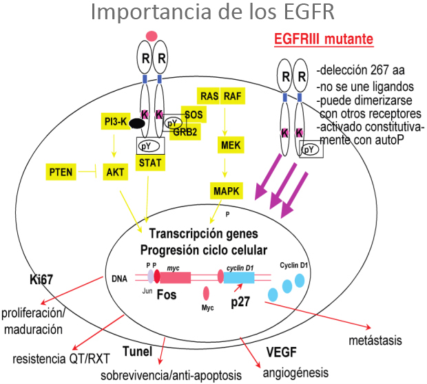

ICO 24h
MÓDULO 3 : Farmacia hospitalaria de dispensación ambulatoria en oncología
Introducción :
Actualmente estamos asistiendo a un continuo cambio en el tratamiento de las enfermedades onco-hematológicas debido al continuo incremento del número de fármacos que se pueden administrar por vía oral con la aparición de la denominada terapia dirigida. Vivimos una transición en el tratamiento farmacológico de estos pacientes cuyos tratamientos se administraban por vía endovenosa en los hospitales de día bajo supervisión a tratamientos orales administrados por el propio paciente o cuidador.
Esta nueva etapa plantea una serie de retos tanto a los profesionales sanitarios como a los pacientes o familiares, como la monitorización de su perfil de toxicidad que es diferente a la quimioterapia clásica, la detección de posibles interacciones (farmacológicas, alimentarias o con la terapia alternativa) y la monitorización de la adherencia al tratamiento.
Es muy importante realizar una adecuada educación sanitaria tanto al paciente como a sus familiares o cuidadores sobre los posibles efectos secundarios y el manejo de los mismos. Un punto importante a diferencia de los tratamientos endovenosos es el empoderamiento dell paciente ya que su implicación es fundamental a la hora de tomar correctamente la medicación (autonomía) y alcanzar la máxima eficacia posible de los tratamientos minimizando el riesgo de que aparezcan efectos secundarios, y qué hacer en caso que estos aparezcan.
3.1 Clasificación : Quimioterapia clásica y terapia dirigida
En las últimas décadas hemos pasado de la quimioterapia clásica a la emergencia de un gran número de moléculas llamadas terapia dirigida oral. Se trata de pequeñas moléculas que inhibin proteínas de superficie, vías de traducción celular de células tumorales y receptores.
Mecanismo de acción de dianas moleculares:
